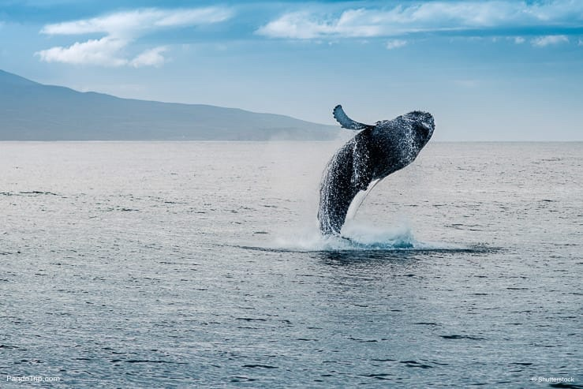

Iceland is known for its vistas of astounding beauty and over 10,000 of these sites include waterfalls. A trip to Iceland is not complete without gazing at these waterfalls. You may visit the best of the best waterfalls such as Skogafoss, Seljalandsfoss and Gullfoss. Skogafoss may be recognized by its bright green banks, while Gullfoss is a traditional two-tiered waterfall. You may find waterfalls with varied heights such as Bruarfoss (which is just 3 metres ) to Morsi Waterfalls that has a captivating height of over 240 meters.
The top 10 Beautiful Waterfalls in Iceland are: Seljalandsfoss, Hraunfossar, Skógafoss, Gullfoss, Goðafoss, Dettifoss, Brúarfoss, Háifoss, Hjálparfoss, Glymur.This is only ten of the many waterfalls we have here in Iceland. You will see waterfalls all over the country when you drive around in your rental car. You can also just Google and see if there are more waterfalls you want to visit. Whatever you choose, we know you will have a fantastic time!
Iceland has enough geothermal waters to satisfy everyone’s desires. So, what better way to enjoy Iceland than to join in! There are hot springs across the country, from the largest town to the most remote location, one of the most famous is the Blue Lagoon.
Most people soak in the Blue Lagoon. This huge, milky-blue spa is fed by mineral-rich heated seawater from the nearby geothermal plant. Though it’s the most expensive one, you cannot deny that Iceland’s most famous geothermal pool is the country’s top tourist attraction. But there are so many other hot pools in the country. Reykjavik has their local one, in the north there is the Myvatn Nature Baths, and on the way to Vik there’s the famous “secret” (but not so secret) mountain springs.
Once considered to be the glitter of Valkyries taking dead souls to the afterlife, these magical lights are still one of the wonders of the world. Actually caused by solar particles entering the earth’s magnetic field and being drawn to the North Pole we all know that you need good planning and luck in order to see them. In Iceland, they are visible almost 8 months out of the year and unlike other countries, there is less cloud cover which means that your probability just went up a notch!
From September to April, the Northern Lights become more visible here. These dancing lights are one of the greatest natural wonders in the world. To witness the aurora borealis in all their glory in Iceland requires patience, luck, and darkness. The country towns in the north are the best place to see the lights, especially during periods of “low” activity. If the lights are really strong, you can sometimes see them in Rekjyavik.

In the depths of Vatnajökull Glacier, there is an ever-shifting, ever-changing, colorful icy world just waiting to be discovered. If you ever thought that Elsa from Disney’s ‘Frozen’ was cool, then you will love this place.
In the depth of the glacier, there is an ever-shifting, ever-changing colorful world, that’s waits to be discovered. This Europe’s largest glacier and covers around 8% of the country’s land area. You can best explore the place under a guided tour. Ever year deep maze like formations are created. The Ice cave season is from November to March, when the weather is cold enough for the cave to be stable. You should have a keen eye to ensure your safety inside the caves. This is surely a must see.
Dyrhólaey Peninsula is a 120-metre promenade famed for its staggering views of Iceland’s South Coast, as well as its historic lighthouse and wealth of birdlife. It is home to a rock arch of the same name. This dramatic coastline offers a majestic glimpse into the ferocious power of nature. As the sea gushes below you with turbulent waves you can stand atop this 120 meter (393 foot) coastline and, quite simply, enjoy the view. If you’re feeling a little bit like a daredevil then you can walk the archway and stand at, what seems like, the edge of the world.
Dyrhólaey, which translates to Door Hill Island, is of volcanic origin and was once an island before joining up to the Icelandic mainland. In ancient times, passing sailors used to refer to Dyrhólaey as ‘Cape Portland’.
This white concrete church was designed by Guðjón Samúelsson in 1937 and can be seen from anywhere in the capital. Surprisingly, its design took inspiration from the volcanic basalt pillars that are dotted across Iceland’s countryside.Situated in the centre of Reykjavík, it is one of the city's best-known landmarks and is visible throughout the city. State Architect Guðjón Samúelsson's design of the church was commissioned in 1937. He is said to have designed it to resemble the trap rocks, mountains and glaciers of Iceland's landscape. The design is similar in style to the expressionist architecture of Grundtvig's Church of Copenhagen, Denmark, completed in 1940.
The church houses a large pipe organ by the German organ builder Johannes Klais of Bonn. It has electronic action; the pipes are remote from the four manuals and pedal console. There are 102 ranks, 72 stops and 5275 pipes. It is 15 metres (49 ft) tall and weighs 25 metric tons (25 long tons; 28 short tons). Its construction was finished in December 1992. It has been recorded by Christopher Herrick in his Organ Fireworks VII CD and by Mattias Wager on his CD Live at Vatnajökull.The church is also used as an observation tower. An observer can take a lift up to the viewing deck and view Reykjavík and the surrounding mountains. The church is still used today for modern services and weddings.
Iceland is home to many magical landscapes from its multicolored mountains, meandering lava trails, crystal clear lakes and calming hot springs. But, where can you find all of these incredible natural phenomena in just one area? The answer, of course, is Landmannalaugar. You might be wondering what makes the unique colorings of the mountains as they stand proud against the skyline. The peaks are made a mineral-filled lava called Rhyolite, which, as it cools unusually slowly it creates splashes of rainbow colors. Also, one of the best hikes in Iceland – Laugavegurinn (which takes in rainbow-colored hills to jet-black volcanic deserts, mystical ice caves, and luscious green valleys) starts here.
Landmannalaugar is a geothermal oasis found in the remote tundra of the interior of Iceland, in the Icelandic Highlands. It’s located in the Southern Highlands within the Fjallabak Nature Reserve, a name that means the “Mountain’s Back”.
Not only are geysers great fun (hands up how many of you have jumped with surprise when a geyser currently erupts), but they are also a fairly rare natural phenomenon, only about 1,000 exist on the whole planet. Geysers are a natural spring which, when the water meets superheated magma far below our feet, it forces the water to bubble and gush upwards until it explodes into the air with unbelievable speed and, in some cases, incredible height. The term ‘Geyser’ was actually coined from the Icelandic work ‘geysa’ which means ‘to gush.’
The most famous geyser in Iceland is the Great Geyser or simply Geysir, takes its name from the Icelandic verb geysa, meaning to gush - and that’s exactly what it does! This incredible geyser is known to shoot boiling water up to 70 meters into the air. Just 20 meters into Geysir’s feeder channel, you would find water reaching a temperature of nearly 125 ºC!
Imagine this, you’re sitting on the shore of a gentle lagoon as the crystal clear water laps at your toes, a flat black sand beach that you are sitting on stretches out before you and one of the most stunning peaks of Iceland dominates the view. Vestrahorn, a 454 meter (1,489 foot) tall screen mountain is definitely one of our top spots to visit during your trip to Iceland.
Vestrahorn, on the Stokksnes peninsula in Iceland, has dramatic peaks reaching up to 454 meters (1490 ft). It rises out of a flat, black sand beach and dominates the view whilst a gentle clear lagoon laps at the shore. This stark contrast is sure to set your heart, and your Instagram, on fire. Lovingly nicknamed the “Batman Mountain” we can see why this mysterious mountain has been captivating visitors for years, but it is only recently receiving mainstream attention. Let’s take a closer look and see what secrets about Vestrahorn the “Batman Mountain” we can unearth.
Iceland could very well be one of the best places in the entire world for whale watching. In fact, the whale-ultra-celeb, Keiko from Free Willy, was captured in Reyðarfjörður Fjord, Iceland. Keiko was a Killer Whale but there are about eleven species which are regularly sighted year-round.
Whale watching tours depart from three primary locations: Reykjavík, Akureyri and Husavík, which is considered Iceland’s whale watching capital. This is due to the abundant animal traffic that passes through Husavík’s fjords, a consequence of the fruitful feeding grounds found off Iceland’s northern coasts.



© Sernel Miranda Asunto (2019)